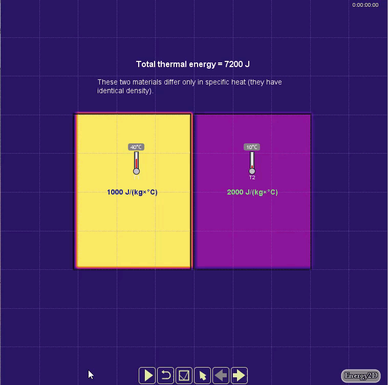
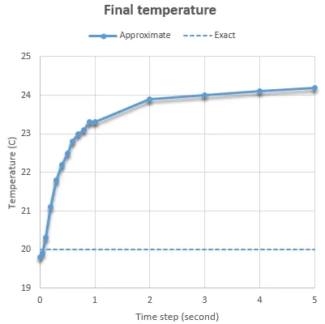
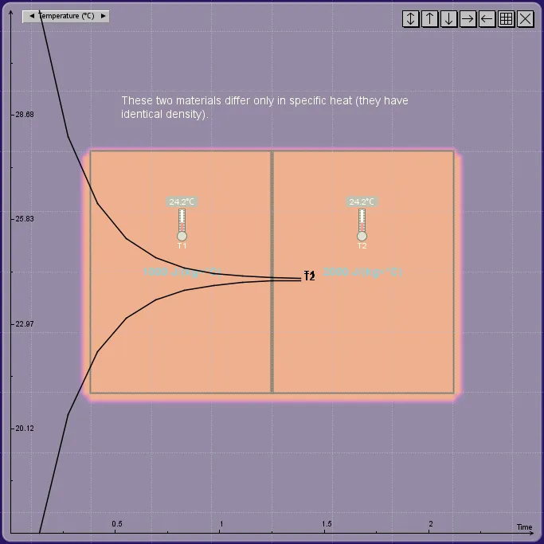
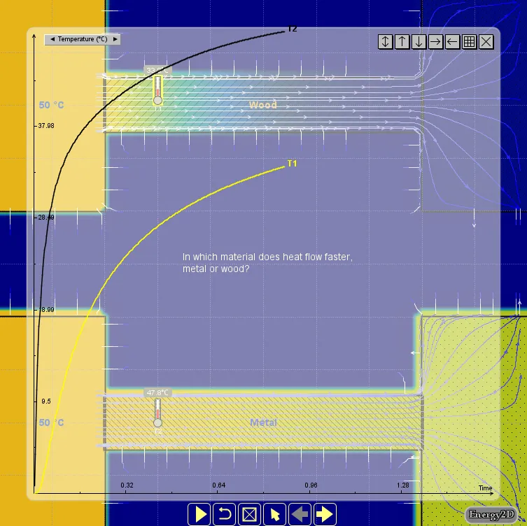
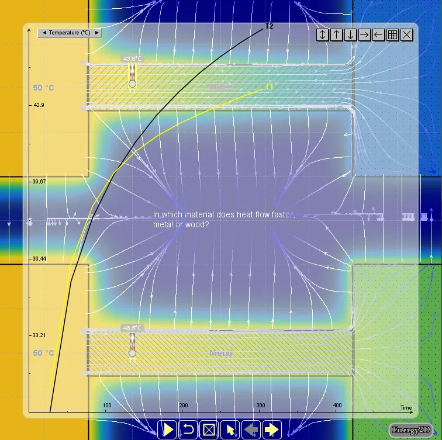

Unconditionally Stable Solvers are not Unconditionally Accurate
Implicit methods never blow up — but stability is not accuracy, and large time steps can make Energy2D simulations quietly wrong.
Unconditionally stable solvers for time-dependent ordinary or partial differential equations are desirable in interactive simulations because they are highly resilient to user actions — they never blow up. In the entertainment industry, unconditionally stable solvers for creating visual fluid effects (e.g., flow, smoke, or fire) in games and movies were popularized by Jos Stam's seminal paper Stable Fluids in 1999.
The problem
The reason that a solver "explodes" is because the inevitable round-off error generated in a numerical procedure gets amplified in iteration and thereby grows exponentially. This occurs especially when the differential equation is stiff. A stiff equation often contains one or more terms that change very rapidly in space or time. For example, an abrupt change of temperature between two touching objects (Figure 1) creates what is known as a singularity in mathematics (a jump discontinuity, to be more specific in this case). Even if the system described by the equation has many other terms that do not behave like this, one such term is enough to crash the entire solver if it is linked to other terms directly or indirectly. To avoid this catastrophe, a very small time step must be used, which makes the simulation too slow to be useful for games.

The problem typically occurs in what is known as the explicit method in the family of the finite-difference methods (FDMs) commonly used to solve time-dependent differential equations. There is a magic bullet for addressing this problem. This method is known as the implicit method. The secret is that it introduces numerical diffusion, an unphysical mechanism that causes the errors to dissipate before they grow out of control. Many unconditionally stable solvers use the implicit method, allowing the user to use a much larger time step to speed up the simulation.
There ain't no such thing as a free lunch, unfortunately. It turns out that we cannot have the advantages of both speed and accuracy at the same time (efficiency and quality are often at odd in reality, as we have all learned from life experiences). Worse, we may even be deceived by the stability of an unconditionally stable solver without questioning the validity of the predicted results. If the error does not drive the solver nuts and the visual looks great, the result must be good, right?
Not really.
The default FDM solver in Energy2D for simulating thermal conduction uses the implicit method. As a result, it never blows up no matter how large the time step is. While this provides good user experiences, you must be cautious if you are using it in serious engineering work that requires not only numerical stability but also numerical reliability (in games we normally do not care about accuracy as long as the visual looks entertaining, but engineering is a precision business).
In the following, I will illustrate the problem using very simple simulations.
Inaccurate prediction of steady states
Figure 1 shows a simulation in which two objects at different temperatures come into contact and thermal energy flows from the high-temperature object into the low-temperature one. The two objects have different heat capacities (another jump discontinuity other than the difference in initial temperatures). As expected, the simulation shows that the two objects approach the same temperature, as illustrated by the convergence of the two temperature curves in the graph. If you increase the time step, this overall equilibration behavior does not change. Everything seems good at this point. But if you look at the final temperature after the system reaches the steady state, you will find that there are some deviations from the exact result, as illustrated in Figure 2, when the time step is larger than 0.1 second. The deviation seems to stabilize at about 24°C, which is 4°C higher than the exact solution.

Inaccurate equilibration time
The inaccuracy caused by large time steps is not limited to the final temperartures in the steady state. Figure 3 shows that the time it takes the system to reach the steady state is more than 10 times (about 1.5 hours as opposed to roughly 0.1 hour — if you read the labels of the horizontal time axis of the graph) if we use a time step of 5 seconds as opposed to 0.05 second. The deceiving part of this is that the simulation appears to run equally quickly in both cases, which may fool your eyes until you look at the numerical outputs in the graphs.

Incorrect transient behaviors
With a more complex system, the transient behaviors can be affected more significantly when a large time step is used. Figure 4 shows a case in which the thermal conduction through two materials of different thermal conductivities (e.g., wood vs. metal) are compared, with a relatively small time step (1 second).

Figure 5 shows that when a time step of 1,000 seconds is used, the wood turns out to be initially more conductive than metal, which, of course, is not correct. If the previous example with two touching objects suggests that the simulation result can be quantitatively inaccurate at large time steps, this example reveals that the results can also be qualitatively incorrect in some cases (which is worse).

Conclusion
The purpose of this article is to inform you that there are certain issues with Energy2D simulations that you must be aware if you are using it for engineering purposes. If these issues are taken care of, Energy2D can be highly accurate for simulating thermal conduction. The general advice is to always choose a few smaller time steps to check if your results would change significantly. You can start with a large time step to set up and test your model rapidly. But you should run your model at smaller time steps to validate your results.
← Back to Energy2D